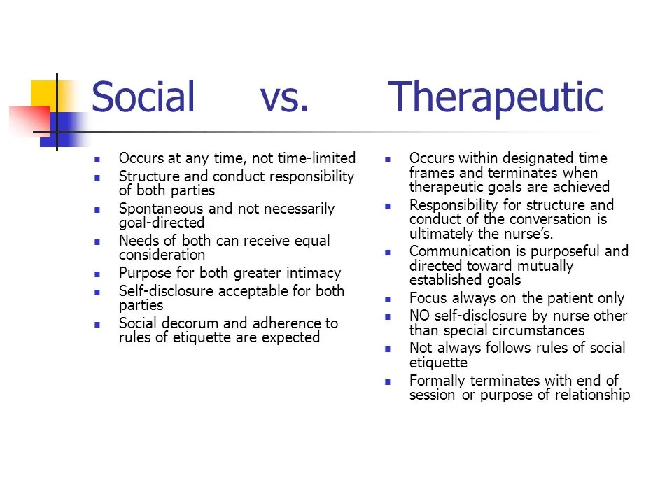
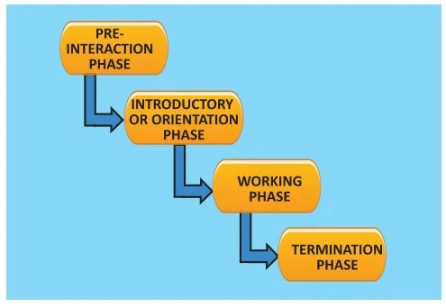

Expanded Nursing Uganda Explanation
Nurse-patient relationship should be understood beyond a short definition. Link the concept to patient history, focused assessment, common risks, nursing priorities, documentation and evaluation of outcomes.
Contents, 19 sections (tap to expand)
01 Nurse-Patient Relationship
A relationship , in its broadest sense, is defined as a state of affinity or connection between individuals. In the context of healthcare, the nurse-patient relationship is a uniquely professional and purposeful bond that forms the foundation for effective patient care and therapeutic outcomes. It is established from the moment of a patient's admission and ideally extends through to their discharge, evolving as their needs change.
02 Types of Relationships
To fully appreciate the therapeutic nature of the nurse-patient interaction, it's essential to differentiate it from other forms of human connection:
03 1. Social Relationship
- Purpose: Primarily initiated for friendship, enjoyment, socialization, or the accomplishment of a shared task (e.g., neighbors discussing gardening).
- Meeting Needs: Mutual needs are met through reciprocal interactions. Participants share ideas, feelings, and experiences in a balanced exchange.
- Boundaries: Less defined boundaries; conversation can be informal, spontaneous, and wide-ranging. Disclosure is typically mutual and at will.
- Focus: Equal focus on both individuals' needs and interests.
- Termination: Can terminate informally or gradually, often without explicit discussion.
- Example: Casual conversations with friends, engaging in a hobby group, or networking at a social event.
04 2. Intimate Relationship
- Purpose: Characterized by a deep emotional commitment and mutual affection between two individuals (e.g., romantic partners, close family members).
- Meeting Needs: A partnership where each member invests in and cares deeply about the other's needs for personal growth, satisfaction, and well-being. There's a high degree of mutual vulnerability and trust.
- Boundaries: Highly permeable boundaries; significant sharing of personal information, emotions, and experiences.
- Focus: Intense, reciprocal focus on each other's emotional, physical, and psychological needs.
- Termination: Often painful and complex if it ends, given the high emotional investment.
- Example: A marital relationship, a deep lifelong friendship, or the bond between a parent and child.
05 3. Therapeutic Relationship (Nurse-Patient Relationship)
- Purpose: A professional, goal-oriented relationship between the nurse and the client/patient designed to promote the client's growth, health, and well-being. It is explicitly established to meet the patient's healthcare needs.
- Meeting Needs: The focus is *exclusively* on the client's needs. The nurse consciously uses their professional knowledge, communication skills, understanding of human behavior, and personal strengths to facilitate the client's health journey.
- Boundaries: Strict, professional boundaries are maintained. The nurse refrains from sharing personal information unrelated to the patient's care and maintains a professional distance to ensure objectivity and patient safety.
- Focus: Unidirectional focus on the client's ideas, experiences, feelings, and health concerns. The nurse's role is to facilitate insight, problem-solving, and positive behavioral change in the patient.
- Termination: This is a planned and discussed process, crucial for the patient's continued progress and sense of closure.
- Example: A nurse working with a patient on managing a chronic illness, a psychiatric nurse helping a patient develop coping strategies, or a rehabilitation nurse assisting a patient in regaining mobility.
06 Differences Between Therapeutic and Social Relationship
Understanding these distinctions is crucial for nurses to maintain professional boundaries and provide effective care:
- Therapeutic Relationship Social Relationship
- It's a planned, structured relationship with specific goals. Just happens organically with mutual interests and no predefined goals.
- Aims exclusively at helping the patient achieve health-related goals. Aims at satisfying the mutual social, emotional, or recreational needs of both parties.
- Has a clear time limit, defined by the patient's care trajectory (admission to discharge, or specific treatment duration). Time varies greatly and may last for years, or even a lifetime, without formal termination.
- The nurse is professionally accountable for the goals and outcomes of the relationship. Both individuals are mutually accountable and responsible for the interaction and its outcomes.
- The nurse accepts the patient as they are ("here & now") without personal/emotional attachments or personal interests influencing care. Objectivity is paramount. There is often significant emotional/personal attachment and vested interest involved.
- Termination is a critical, planned, and openly discussed phase with the client/patient to ensure proper closure and continuity of care. The relationship may exist lifelong or terminate gradually and informally, often without explicit discussion.
- The relationship is patient-centered; the nurse's self-disclosure is limited and only for the patient's therapeutic benefit. The relationship is reciprocal; both parties freely engage in self-disclosure.
- Boundaries are clearly defined and maintained to protect the patient and the professional nature of the relationship. Boundaries are more fluid, informal, and less defined.
07 Goals/Aims of Therapeutic Nurse-Patient Relationship
The overarching purpose of this unique bond is to facilitate the patient's healing and growth. Specific aims include:
- Facilitating Communication of Distressing Thoughts & Feelings: Providing a safe, non-judgmental space for patients to express fears, anxieties, pain, and other difficult emotions, which is vital for emotional processing and stress reduction.
- Assisting the Client with Problem-Solving: Collaborating with the patient to identify challenges related to their health condition and develop effective coping strategies and solutions. This empowers the patient to participate actively in their care.
- Helping Clients Examine Self-Defeating Behaviors and Test Alternatives: Guiding patients to recognize patterns of behavior or thought that hinder their health, and encouraging them to explore and practice healthier alternatives in a supportive environment.
- Promoting Self-Care and Independence: Empowering patients to take increasing responsibility for their own health management and daily living activities, fostering autonomy and self-efficacy.
- Enhancing Understanding of Illness and Treatment: Educating patients about their condition, medications, and treatment plans in a way that is understandable and relevant to their lives.
- Promoting Adaptation to Health Changes: Helping patients adjust to new limitations, disabilities, or chronic conditions, fostering resilience and positive coping.
- To Gain Confidence from the Patient’s Relatives/Family: Building trust not only with the patient but also with their support system, ensuring a collaborative approach to care and adherence to treatment plans post-discharge. This often involves clear communication and demonstrating competence and empathy.
- Providing Emotional Support and Reassurance: Being a consistent source of comfort, reassurance, and hope, especially during times of vulnerability and uncertainty.
08 Components of Nurse-Patient Relationship
Several key elements are crucial for building a strong and effective therapeutic relationship:
- Rapport: This is a foundational element, defined as a relationship or communication characterized by mutual understanding, harmony, and responsiveness. The nurse establishes rapport through: Demonstrating genuine understanding of the patient's situation and feelings.
- Displaying warmth through verbal and non-verbal cues (e.g., eye contact, approachable demeanor).
- Adopting a consistently non-judgmental attitude, creating a safe space for the patient to be open.
- Active listening, showing the patient they are heard and valued.
- This foundation helps alleviate the patient's initial anxieties and fosters trust.
- Empathy: This is the profound ability to understand and share the feelings of another without necessarily having experienced the exact same situation. The nurse needs not have experienced the specific illness but must be able to imagine the feelings associated with the experience. It involves: Receiving information with an open, non-judgmental acceptance.
- Accurately perceiving the patient's internal experience.
- Communicating that understanding back to the patient in a way that makes them feel heard and validated.
- Empathy serves as a crucial basis for deepening the relationship and tailoring care to the individual.
- Warmth: This is the ability to help the client feel genuinely cared for, comfortable, and accepted. It demonstrates: Acceptance of the client as a unique individual, valuing their personhood regardless of their condition or background.
- Willingness to share in the client’s joy and sorrow, showing genuine human connection.
- Conveying kindness, compassion, and a supportive presence.
- It creates a welcoming atmosphere where the patient feels safe and understood.
- Genuineness (Congruence): This involves being authentic, real, and transparent in the relationship. The nurse's response to the client is sincere and reflects their true internal response. Key aspects include: The nurse being themselves, avoiding a false professional façade.
- Consistency between the nurse’s verbal communication and their non-verbal cues (e.g., body language, facial expressions). If verbal and non-verbal messages contradict, the patient may lose trust.
- Honesty, within professional boundaries, about what can and cannot be done.
- This builds credibility and trust, as the patient perceives the nurse as reliable and trustworthy.
- Good Communication Skills: Essential for all aspects of nursing care, these include: Verbal Communication: Clear, concise language, active listening, asking open-ended questions, summarizing, paraphrasing, and providing understandable explanations.
- Non-Verbal Communication: Maintaining appropriate eye contact, open posture, appropriate facial expressions, and respectful personal space.
- Therapeutic Communication Techniques: Using silence, reflection, clarification, focusing, and offering self.
- Avoiding jargon, being mindful of tone, and adapting communication to the patient's cognitive and emotional state.
- Self-Respect and Respect for Patient’s Culture, Beliefs, Norms, and Occasionally Some Faulty Beliefs: Self-Respect: A nurse who respects themselves is better able to set boundaries, manage stress, and deliver care with confidence and integrity.
- Respect for Patient: This is paramount. It involves acknowledging and valuing the patient's unique cultural background, spiritual beliefs, personal norms, and values. This includes respecting their health beliefs, even if they differ from mainstream medical views, as long as they do not pose direct harm. Understanding these aspects allows for culturally sensitive and patient-centered care.
- Acknowledging and working with "faulty beliefs" (misconceptions) requires patience, education, and presenting evidence without being dismissive.
- Confidentiality of the Patient’s Matter, Especially Relating to His Illness: Maintaining strict confidentiality of all patient information is a legal and ethical imperative.
- Patients must feel assured that their personal and health information will not be shared without their consent, fostering trust and encouraging open communication.
- This extends to medical records, personal discussions, and observations made during care.
09 How Does a Nurse Achieve a Positive Therapeutic Nurse-Patient Relationship?
Achieving this vital connection requires intentional effort and consistent application of professional principles:
- Physical Presence and Environment: Staying present and close to the patient when appropriate, ensuring both the patient and the nurse are in a comfortable and private environment conducive to open communication.
- Full Attention and Predictability: Giving full, undivided attention to the client during interactions. Never surprising the patient with procedures or discussions; always explain what is happening and why.
- Respecting Preferences (Within Limits): Respecting the patients’ likes and dislikes within the bounds of safety, ethical practice, and medical necessity. This shows consideration for their autonomy.
- Demonstrating Empathy and Kindness: Consistently showing genuine understanding of their feelings and treating them with compassion and gentleness.
- Facilitating Progress and Acknowledging Limitations: Assisting the patient to see their progress, celebrating small victories, and gently guiding them to understand their limitations and realities of their health condition.
- Personalized Addressing: Always addressing the patient by the name of their choice (e.g., Mr./Ms. Smith, or their first name if preferred), which acknowledges their individuality and dignity.
- Positive Demeanor: Being genuinely happy and approachable when receiving the patient and during all subsequent nursing care interactions. A warm, positive demeanor can significantly impact the patient’s experience.
- Active Listening: Paying complete attention to what the patient is saying, both verbally and non-verbally, and providing verbal and non-verbal cues to show you are engaged.
- Setting Clear Boundaries: Establishing and maintaining professional boundaries from the outset to ensure the relationship remains therapeutic and not social or intimate.
- Being Non-Judgmental: Accepting the patient without judgment, regardless of their background, choices, or health condition.
10 Phases of Therapeutic Nurse-Patient Relationship
The therapeutic relationship typically progresses through distinct phases, each with specific tasks and goals:
11 1. Pre-interaction Phase
- When it Begins: This phase begins before the nurse ever meets the patient, typically when the nurse is assigned to care for a particular client.
- Nurse's Tasks: Explore Own Feelings, Fantasies, and Fears: Self-awareness is critical. The nurse reflects on any personal biases, stereotypes, anxieties, or preconceived notions they might have about the patient (e.g., based on diagnosis, appearance, or background) to ensure these do not interfere with objective care.
- Analyze Own Professional Strengths and Limitations: Assess personal skills, knowledge, and areas where further information or support might be needed.
- Gather Data About the Patient (Whenever Possible): Review the patient's medical records, history, diagnosis, treatment plan, and any available social information. This helps in anticipating needs and planning initial interventions.
- Plan for the First Meeting with the Patient: Based on the gathered data, the nurse considers initial communication strategies, potential patient needs, and how to establish a welcoming environment.
12 2. Introductory / Orientation Phase
- When it Occurs: This phase begins when the nurse and patient meet for the first time. It is a period of getting acquainted and establishing initial trust.
- Nurse's Primary Concern: To find out why the patient sought help and their immediate concerns. This forms the basis of the initial nursing assessment.
- Nurse's Tasks: Establish Rapport, Trust, and Acceptance: Through warmth, empathy, genuineness, and non-judgmental communication, create a safe atmosphere.
- Establish Communication: Encourage the patient to express their thoughts, feelings, and perceptions about their health and situation.
- Gather Data: Continue the nursing assessment, including the client's feelings, perceived strengths, and identified weaknesses/challenges.
- Define Client’s Problems and Set Priorities: Collaboratively identify the patient's primary concerns and establish initial, mutually agreed-upon goals for nursing interventions.
- Formulate a Contract: Discuss roles, responsibilities, confidentiality, and the purpose and length of the relationship (even if approximate).
13 3. Working Phase
- When it Occurs: This is the longest and most active phase, where most of the therapeutic work is carried out. It involves addressing the patient's problems and promoting behavioral change.
- Key Focus: The nurse and the patient actively explore relevant stressors, develop insight, implement coping strategies, and work towards behavioral change.
- Nurse's Tasks: Gather Further Data and Explore Relevant Stressors: Delve deeper into the patient's history, current challenges, and the impact of their illness on their life.
- Promote Patient’s Development of Insight: Help the patient understand the links between their thoughts, feelings, and behaviors, and how these impact their health.
- Facilitate Constructive Coping Mechanisms: Teach and encourage the patient to try new, healthier ways of dealing with stress, illness, and life challenges.
- Facilitate Behavioral Change: Support the patient in making tangible changes in their lifestyle, health practices, and responses to their condition. This includes education, skill-building, and practice.
- Provide Opportunities for Independent Functioning: Gradually encourage the patient to take more responsibility for their self-care and decision-making, fostering autonomy.
- Evaluate Problems and Goals and Redefine as Necessary: Continuously assess the patient's progress, re-evaluate the effectiveness of interventions, and adjust goals or care plans as the patient's condition evolves or new issues emerge.
- Manage Resistance and Transference/Countertransference: Be aware of and address any patient resistance to change or the emergence of transference/countertransference dynamics (see "Constraints" section for explanation).
14 4. Termination Phase
- When it Occurs: This is the final phase, marking the breaking or ending of the formal therapeutic relationship. It is often the most difficult but also a crucial and necessary part of the process.
- Goal: To bring a therapeutic and planned end to the relationship, ensuring the patient's continued well-being post-discharge.
- Nurse's Tasks: Establish Reality of Separation: Begin discussing termination well in advance to prepare the patient for the end of the relationship. Acknowledge that the professional relationship is coming to an end.
- Mutually Explore Feelings of Rejection, Loss, Sadness, Anger, and Related Behavior: Patients may experience a range of emotions (e.g., sadness, anxiety, anger, even denial) as the relationship concludes. The nurse helps the patient verbalize and process these feelings, validating their experience.
- Review Progress of Therapy and Attainment of Goals: Summarize the patient's achievements, skills learned, and insights gained throughout the therapeutic process. This reinforces their progress and builds confidence for the future.
- Formulate Plans for Meeting Future Therapy Needs/Continuity of Care: Discuss discharge plans, follow-up appointments, community resources, support groups, and strategies for maintaining newly acquired skills. This ensures continuity and prevents regression.
- Share Feelings About the Relationship (Appropriately): The nurse may briefly share professional feelings about the positive aspects of the relationship and their confidence in the patient's future, without blurring professional boundaries.
15 Constraints / Problems in Establishing Nurse-Patient Relationship
Various factors can impede the formation and effectiveness of a therapeutic relationship:
- Patient's Mental State: Acute Mental Health Conditions: Conditions like severe psychosis (e.g., hallucinations, delusions), mutism, extreme anxiety, or aggressive/violent behavior can make communication and trust-building extremely challenging.
- Cognitive Impairment: Dementia, delirium, or severe intellectual disabilities can hinder the patient's ability to engage in complex communication or remember interactions.
- Language Barrier: Inability to communicate effectively due to different languages can prevent understanding and rapport. This necessitates the use of professional interpreters.
- Insufficient Staffing: Overworked nurses due to inadequate staffing levels may lack the time and energy required to engage in meaningful therapeutic interactions with patients.
- Lack of Facilities on the Ward: An environment that lacks privacy, is overly noisy, or has inadequate space for private conversations can hinder communication and comfort.
- Post-Medication Effects: Sedation, confusion, or other side effects from medications can impair the patient's ability to participate in conversation or interact meaningfully.
- Lack of Respect for Patient and His Beliefs: If the nurse (or healthcare system) fails to respect the patient's cultural background, personal values, spiritual beliefs, or autonomy, it will erode trust and create resistance.
- Unnecessary Needs by the Patient: Patients who make excessive demands, seek special favors, or try to manipulate the nurse can strain the professional boundaries and relationship.
- Un-therapeutic Ward Environment: A chaotic, impersonal, or unsafe environment can make patients feel anxious, vulnerable, and less likely to engage in a therapeutic relationship.
- Transference: This occurs when the patient unconsciously projects feelings, thoughts, and behaviors from past significant relationships onto the nurse. For example, the patient might treat the nurse as a demanding parent, a beloved sibling, or a past abuser. This can manifest as intense anger, dependency, or idealization directed at the nurse, making objective interaction difficult.
- Counter-transference: This is the nurse's unconscious emotional reaction to the patient, often a response to the patient's transference. The nurse may project their own unresolved feelings or past experiences onto the patient. For example, if a patient reminds the nurse of a difficult family member, the nurse might unconsciously become overly protective, dismissive, or irritated, compromising objectivity.
- Dependency: While some level of dependency is normal during illness, some clients may become overly dependent on the nurse, resisting efforts towards independence. The nurse must be aware of this and gradually work to reduce such dependency, promoting the patient's independent functioning and self-efficacy.
- Boundary Violations: When the professional boundaries become blurred, leading to the relationship becoming social, intimate, or exploitative (e.g., dual relationships, excessive self-disclosure by the nurse).
- Nurse Burnout/Stress: A nurse experiencing high levels of stress or burnout may find it difficult to engage empathetically and therapeutically with patients.
- Lack of Communication Skills: Inadequate training or difficulty in applying therapeutic communication techniques can impede effective interaction.
16 Nursing Uganda Clinical Lens
Use Nurse-patient relationship as a practical nursing topic, not only a memorized definition. Turn the topic into practical nursing knowledge: meaning, assessment, care priorities, teaching and evaluation.
- What to understand first: define nurse-patient relationship, identify the normal or expected pattern, then explain what changes when the patient is unwell.
- Why it matters in care: the nurse must recognize risk early, explain findings clearly, document accurately and know when to escalate.
- How to revise it: connect each point to assessment, nursing diagnosis or care problem, intervention, rationale and evaluation.
17 Assessment Guide
- Key definitions, patient history, focused observations and risk factors.
- Findings that are normal, abnormal or urgent.
- Resources, referral needs and documentation requirements.
18 Nursing Priorities, Rationales and Outcomes
- Protect safety, comfort, dignity and infection prevention.
- Provide clear care, education and escalation when needed.
- Evaluate response and record what changed.
The rationale for these priorities is patient safety: nursing actions should prevent deterioration, reduce discomfort, support recovery and create clear evidence for the next caregiver.
- Expected outcome: The topic is understood in a way that supports safe nursing judgement and revision.
19 Patient Teaching and Revision Check
- Explain nurse-patient relationship in simple language the patient or caregiver can repeat back.
- Teach warning signs, medicine or follow-up instructions, hygiene or lifestyle points where relevant.
- For exams, prepare a short answer using: definition, causes or risk factors, signs, assessment, management, complications and prevention.
- For ward practice, document baseline findings, actions taken, patient response and the plan for review.
Illustrations and Diagrams (3)



Related Video Lectures
Watch nursing lecture videos on YouTube for this topic. Opens in a new tab.
Watch on YouTubeExternal link: YouTube may use its own cookies and terms. Nursing Uganda is not affiliated with YouTube.